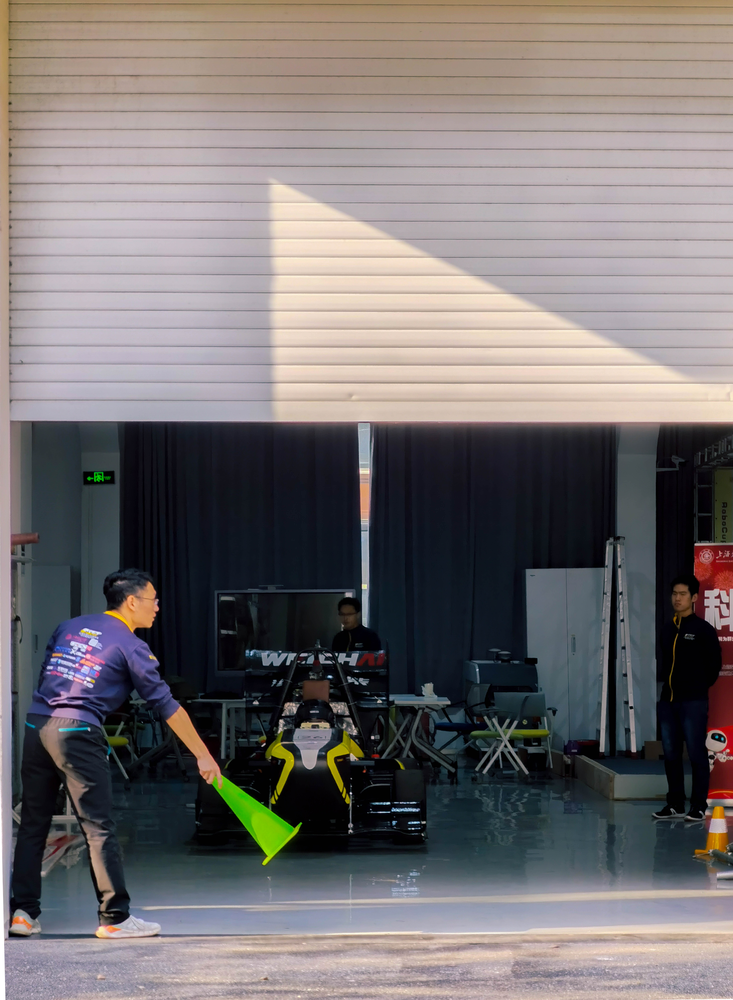
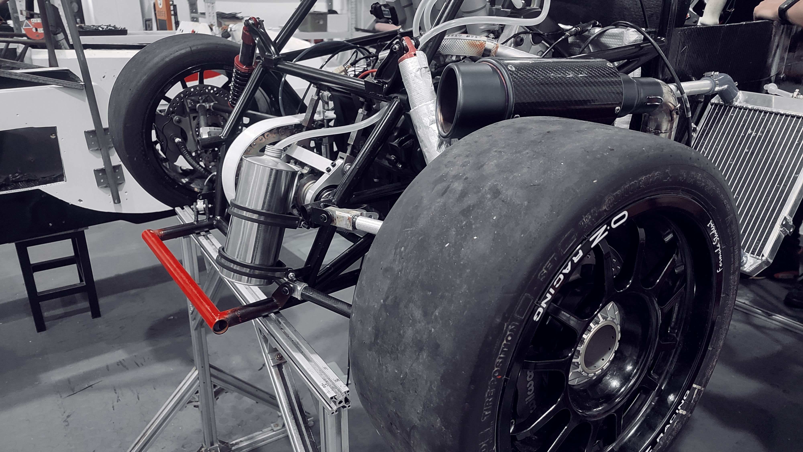

Technical Groups
Chassis group As we all know, the contact between the car and the ground is only four tires. The acceleration, steering and braking of the car are all provided by the friction between the tires and the ground. And the role of the chassis, is to connect the wheel edge and the body, so that the tire is always close to the ground, the friction of the good effect on the whole car. As a result, the set-up of the car's chassis will also greatly affect the driving dynamics of the car. So, joining the chassis group is also a great help to become a driver. The chassis group of a racing team is responsible for the design, manufacture and tuning of three major systems: suspension, steering and braking. Suspension system: mainly includes wheel core, column, upper and lower control arm, push rod and other components. For the 2021 season, we explored a carbon-fiber to metal bonding process that significantly reduces suspension weight. Steering system: It mainly includes steering wheel, steering machine, steering lever and other components. In the 2021 season, we added micro switch to the new steering wheel to greatly improve the feel of the shift paddles. In the new car design for next season, we plan to include rear wheel steering to improve the car's cornering ability. Brake system: It mainly includes brake pedal, oil circuit, caliper, brake disc and other components. In 2021 season, we increased the size of brake disc and replaced it with four-piston caliper to enhance braking force.

Body group The body frame is the carrier of all the racing systems, taking into account the task of ensuring the solid structure of the vehicle and protecting the safety of the driver. You can learn the knowledge of carbon fiber and other high-tech materials in detail, be familiar with the use of 3D modeling and simulation software in the design process, and fully exercise your practical ability in the manufacturing process of the body. The overall design of the body considers ergonomics, strength, weight, cost and other factors Main work flow of body group: Measurement ergonomics. The man-machine data of the driver is collected, from which the car body with convenient driver control and safe and comfortable cabin space is designed. Catia 3D detailed modeling. The main use of CATIA software, reference to the data, the body shape design. Layering selection and simulation. The car body is mainly composed of carbon fiber and aluminum honeycomb core materials. We should select appropriate carbon cloth and core materials according to the stress of the car body, and use ANSYS software for lay-up simulation. Manufacturing of layering. After getting the mold, we spread layer after layer of carbon cloth and core material on the mold, paste it and compact it, and send it into the autoclave to solidify and form under high temperature and pressure. Finally, we get the light and strong carbon fiber monomer shell, which is the body of our Formula car. At the same time, the body group also undertakes the anti-collision buffer structure, seat belts, seat headrest and a series of supporting facilities responsible for driver safety.

Aerodynamics group Elegant body lines, dramatic front wing, towering rear wing...... The work of the empty sleeve group is to play and fight with the air, to overcome the air resistance and pursue the extreme downforce at the same time. As the subsystem with the least restrictive rules in the whole car, the aerodynamics package is designed to be flexible and varied. Through surface modeling and CFD aerodynamics simulation and other development means, and through hundreds of times of design optimization, to achieve the ideal effect. If you have a strong imagination and a strong ability to learn on your own, the empty set provides plenty of space to make your ideas a reality. A good empty sleeve should not just stay in a computer simulation. For practical purposes, they need to be strong and reliable while doing their job. As a result, the aerodynamic kits are manufactured using a large number of aerospace grade materials and advanced manufacturing processes to ensure machining accuracy and component strength. Here, you will master CATIA, STAR CCM + and other professional industrial design software, experience the carbon fiber manufacturing process, and close exchange and cooperation with multinational companies.
Power group Power is the core of a car, and the work undertaken by a power group is also crucial in a racing team. In the power group, you can not only experience the roar of 600cc displacement engine in person, but also enjoy the smooth acceleration experience brought by the high-power motor. In the era of the intersection of oil and electric power, you have everything possible in the power group. After that overview, let's talk about the details of how the Power unit works. We divide it into two parts, as we do in our daily work -- oil power and electric power. Oil power: The sound, the hot exhaust -- it's a big part of what we love about racing. The work of oil power revolves around the engine, the heart of the car. In order to show the surging power of CBR600RR as much as possible in the rules, the power group will redesign and manufacture a series of subsystems around the engine, including intake, exhaust, external cooling waterways, output transmission and so on, to release all the possibilities of the engine. In addition, the power group is responsible for the interaction between the driver and the engine, acting as an important bridge from the brain to the heart. The gas pedal cable, clutch system, pneumatic shift system, as well as the most important and technical ECU debugging and installation and vehicle parameters debugging tasks, all in the power group! Electric power: Higher power and torque than gas-powered engines make for a more exciting driving experience. Electrodynamic work does not have a particular center, but goes hand in hand. The three-power system consists of a high-voltage electric drive motor, a high-voltage battery box and a high-voltage controller. The layout of the vehicle is no less difficult than the oil car, but also the direction of the trend of The Times. Design and manufacture battery case, heat dissipation and transmission, master commissioning wheel rim motor, you expect the challenge here!

Electronic group Responsible for vehicle electronic logic, wiring harness design; We control the low-voltage circuit of the vehicle; The drive, the algorithm, the power, it's all powered by us; Designing instruments, reading CAN buses, we're good at everything In the electronics group, you can: design your own PCB board; Become ten thousand people focus on the MCU big guy; I brought the house down in the project class
Drive and control group Responsible for steering and braking of unmanned steer-by-wire; Motor control logic design, vehicle dynamic control; What the AI brain asks for is done by us Can control algorithms also snatch chassis jobs? Distributed drive, steer-by-wire, is that what your teacher is working on? In the drive and control group, you can: design a set of autonomous driving mechanism; To do the most cutting-edge underlying control algorithm; Was invited by MATLAB Simulink to become a dynamic control master!
Algorithm group The goal of the algorithm group is to design a set of unmanned algorithms for the unmanned Formula car to accomplish a specific goal, which is divided into three parts in order: perception, trajectory generation and control. The perception part uses the camera and lidar to identify and compose the layout of the site. The trajectory generation part uses the information generated by the perception module to plan a reasonable driving path. The control part uses track information to control the current state of the vehicle and is responsible for the communication between the upper computer and the lower computer. The specific contents include: the use of ROS, deep learning and image recognition, the use of LiDAR and SLAM mapping algorithm, the learning of planning and control algorithm, and CAN communication.